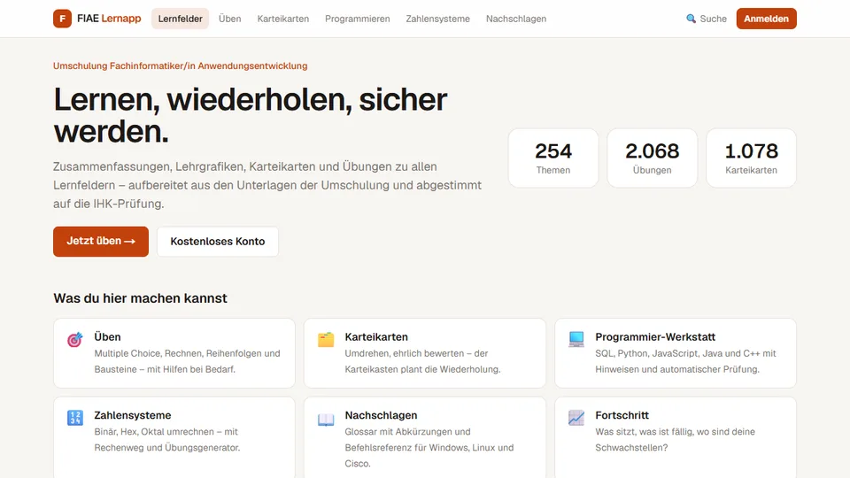

FIAE Lernapp
Eine eigene Lernplattform für die Umschulung zur Fachinformatikerin, die ich mit
meiner Klasse teile: 254 Themen aus den Lernfeldern 0 bis 9, über 2.000 Übungen,
Karteikarten mit Karteikasten-System und eine Programmier-Werkstatt, in der SQL,
Python und JavaScript direkt im Browser geprüft werden.
Next.js
TypeScript
MongoDB
Tailwind CSS
Gelernt: Eine komplette Web-App mit Datenbank, Benutzerkonten
und Online-Betrieb aufzubauen.

ATAYA Community App
Eine Mitglieder-App für die Community des ATAYA-Zentrums in Freiburg, ehrenamtlich
entwickelt: Chat in Gruppen und privat, Kalender mit Seminaren, Neuigkeiten, Galerie
und Wissensseiten zu Yoga, vedischer Astrologie und Kundalini Care. Aufs Handy
installierbar.
React
TypeScript
Supabase
PostgreSQL
Gelernt: Datenschutz direkt in der Datenbank umzusetzen und mit
automatischen Tests abzusichern.
Portfolio-Homepage
Entwicklung einer persönlichen mehrseitigen Homepage mit Startseite, Navigation,
Banner, Profilbereich und thematischen Unterseiten.
HTML
CSS
Layout
Navigation
Gelernt: Verlinkungen, Seitenstruktur, CSS-Gestaltung,
Bildintegration und insgesamt ein harmonisches Webdesign.
Webdesign-Übungen
Übungen zu Farbharmonie, Typografie, Buttons, Karten-Layouts,
Hover-Effekten und visuell sauberem Seitenaufbau.
CSS
Farben
Buttons
Benutzerführung
Gelernt: Wie stark gute Gestaltung die Wirkung
und Verständlichkeit einer Website verbessert.
Lernaufgaben Anwendungsentwicklung
Bearbeitung praxisnaher Aufgaben im Rahmen meiner Umschulung zur
Fachinformatikerin für Anwendungsentwicklung.
Problemlösung
Struktur
Analytisches Denken
Gelernt: Aufgaben zu analysieren, Lösungen Schritt für Schritt
umzusetzen und Ergebnisse verständlich aufzubauen.
Eigenständige Weiterbildung
Zusätzliche Weiterentwicklung über digitale Lernangebote und Zertifikate
im Bereich KI-Tools, Networking und Webentwicklung.
Copilot
Cisco
Mimo
Selbststudium
Gelernt: Kontinuierlich dranzubleiben, neue Themen
eigenständig zu erschließen und mein Profil gezielt auszubauen.